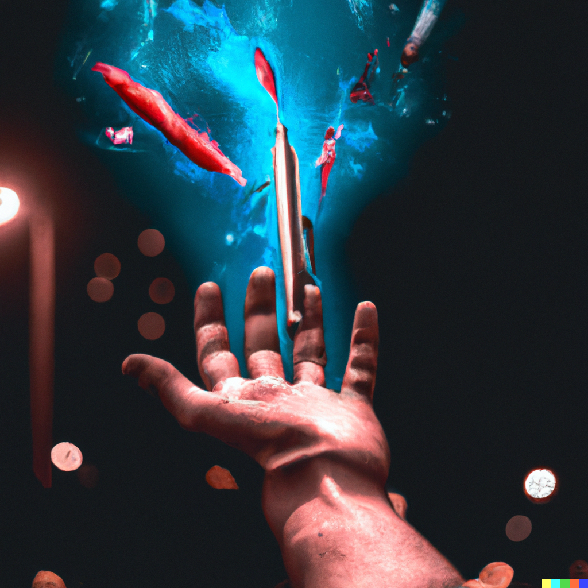
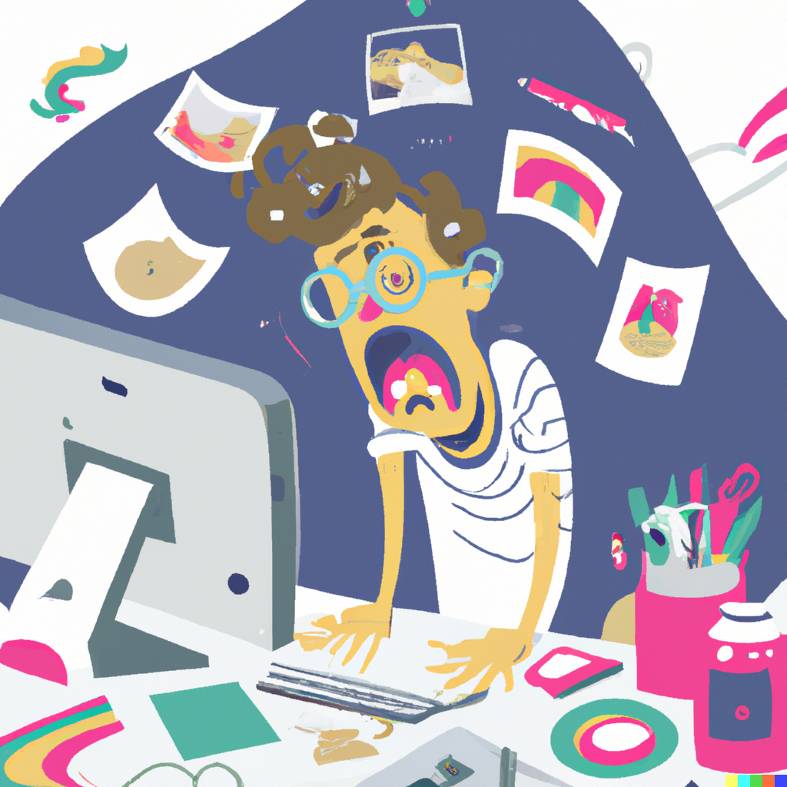

Artists' Perspectives
A report from 2018 found that 37% of creative professionals were very concerned about the impact AI may have on their careers, but the majority of respondents, 67%, were not concerned. The latest generation of AI art generators from 2022 are orders of magnitude more sophisticated than the publicly available AI technology from 2018, so it would be ill advised to extrapolate and assume the study from 2018 translates easily to 2022. It is entirely likely that creatives who previously gave AI little thought now feel threatened by the newest generation of generators.
Many artists that have experimented with the technology have found uses for it in their creative process. Their experience working with generators has also led many of them to report that they do not feel that they can be fully or easily replaced by AI, but they do feel that it will change the industry.
"Expansion of an artist's imagination and creativity"
The most threatened creative professionals are the most vulnerable. Editorial illustrators and concept artists in entry level positions are most likely to be replaced by companies tightening their budgets, people who are being paid for fast turnover and not for their unique aesthetic that they have developed over the course of a career. As these positions often serve as entry points to the industry for early career professionals in a field that is difficult to break into, there is concern that AI may become another barrier to entry for creatives.
"Anxious entry level illustrator working furiously"
However, if a company chooses to eliminate illustrators from their staff, it is unlikely that they’d be able to completely eliminate creative professionals. Being able to visualize an image and produce a prompt for it is not a straightforward skillset. Users need to have the right visual vocabulary to describe what they want, experience working with a generator to truly be able to shape their results, and some design ability to ultimately take the image, format it, and make any additional edits necessary for an image to be used for its purpose—cover, spot illustration, etc. In the near future “prompter” may become an official job title, but that job would still entail a lot of design skills.
At this point the impact that AI will have on the art industry is unknown. It is likely that it will have an impact, but it may be a neutral shift for creative professionals, as opposed to a positive or negative one.